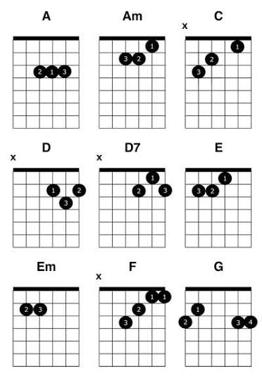

🎸 Chord Coach
Listen • Learn • Practice
MIC OFF
Detected chord
—
Tap Start Listening
Match confidence
0%
Volume: 0.0000 | Gap: 0.0%
🎙 Start Listening
Default microphone
Your browser will ask for microphone permission the first time.
Practice mode
Target chord
Practice Mode Off
Recent chords
No chords detected yet
Detection settings
Precision threshold
80%
Mic sensitivity
70%
Hide Chord Guide
Chord reference guide

Keep
chords_guide.png
in the same folder as this HTML file.